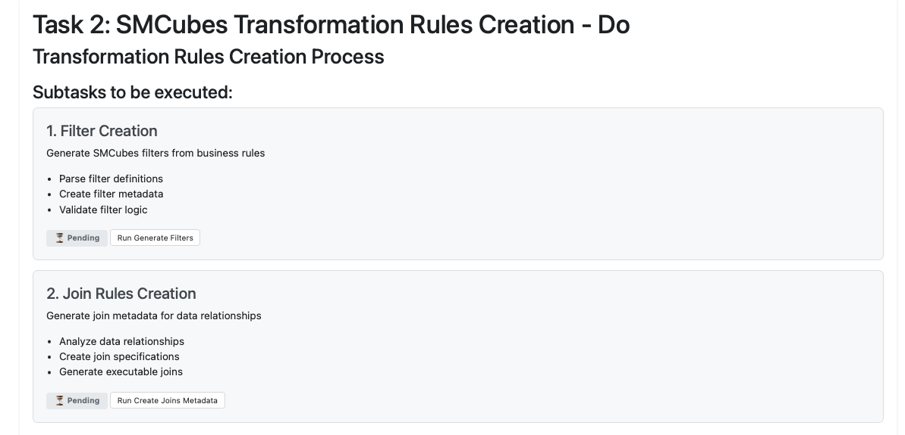
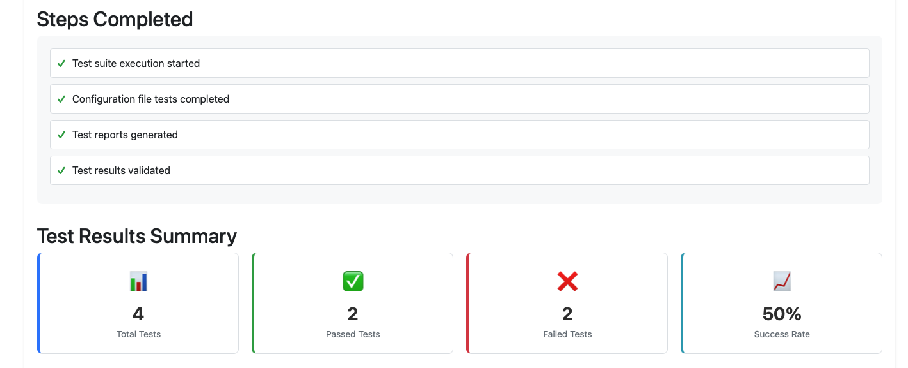

Feature Overview
The Eclipse Free BIRD Tools Workflow Dashboard is your central control center for managing and executing regulatory reporting workflows. It provides a streamlined interface for processing BIRD data through a systematic 4-task sequential workflow, enabling efficient regulatory compliance and data transformation.
Purpose
The Workflow Dashboard serves as the primary orchestration point for your regulatory reporting processes. It eliminates the complexity of manual data processing by providing:
- Automated Sequential Processing: Execute complex workflows with a single click
- Progress Tracking: Monitor each step of your data transformation journey
- Configuration Management: Centralize all workflow settings in one place
- Quick Actions: Accelerate common operations with one-click automation
This feature is essential for organizations that need to maintain compliance with European regulatory standards while minimizing manual effort and reducing the risk of processing errors.
Getting Started
Prerequisites
Before using the Workflow Dashboard, ensure you have:
- FreeBIRD Application installed and running (or in codespaces)
- Valid GitHub repository access with appropriate permissions
- Database connectivity established
- Configuration files prepared in your repository
Accessing the Dashboard
To access the dashboard, launch the FreeBIRD Application, navigate to the Home page, and click on "Task Workflow Dashboard".
Step-by-Step Guide
Configuration Setup
Before starting any tasks, you must configure your workflow settings.

Start by selecting "EIL (Input Layer)" as your data model type. Enter your GitHub repository URL and specify the branch you want to use, which defaults to "main" if not specified. Set both the configuration files source and technical export source to "GitHub Repository". After entering all settings, click the save button to store your configuration.
Quick Actions Panel
The Quick Actions panel provides several important functions. Use Retrieve Artifacts to download configuration files from your GitHub repository. The Setup Database button initializes your database environment. You can select any task from 1 to 4 as your target endpoint and then use Run Automode to automatically execute from Task 1 up to your selected target. The panel also displays your current database and configuration status, along with a session ID for tracking. If you need to start over, use Reset Tasks 1-4 to clear task history while keeping your configuration, or Reset Everything for a complete reset.
4-Task Sequential Workflow
The workflow consists of four sequential tasks that must be executed in order.

Task 1: SMCubes Core Creation
This task creates foundational data structures and cube definitions.

To execute Task 1, click the "Do" button to start the execution. The system will then clear the database by running "Delete Database", create cube structures through "Import Input Model", generate report templates, import LDM/EIL hierarchies, and process semantic integrations. Alternatively, you can use the Quick Actions panel by selecting "Task 1" as your target and clicking "Run Automode" for automatic execution. After completion, click "Review" to verify that over 50 cubes and 100 templates have been created.

Task 2: SMCubes Transformation Rules Creation
This task generates transformation rules and metadata for your data processing.

Start Task 2 by clicking the "Do" button. The system will generate filters and create join metadata for your transformations. You can also use Quick Actions by selecting "Task 2" as your target and running automode, which will execute both Task 1 and Task 2 automatically. Review the results to confirm that filter and join metadata creation has completed successfully.

Task 3: Python Transformation Rules Creation
This task converts your transformation rules into executable Python code.

Click the "Do" button to begin Task 3. The system will generate filter code and join code based on the metadata created in Task 2. For automated execution, select "Task 3" in Quick Actions and run automode to execute Tasks 1 through 3 sequentially. Verify that the executable Python transformation code has been generated successfully.
Task 4: Full Execution with Test Suite
This final task validates your regulatory templates with comprehensive testing.
Start Task 4 by clicking the "Do" button, then run the configuration file tests. Alternatively, select "Task 4: Full Execution" in Quick Actions and run automode to execute the complete workflow from Task 1 through Task 4 automatically. Review the test execution reports to check pass/fail statistics and ensure all validations have completed successfully.


Best Practices
Always execute tasks in sequential order from Task 1 through Task 4. Complete each task before proceeding to the next and use the Review function to validate completion. Save your configuration before starting any workflow execution and verify that your GitHub credentials are valid and current. Check that the system status shows "Ready" and "Configured" before beginning execution.
Conclusion
The Workflow Dashboard streamlines your regulatory reporting process by providing a unified interface for executing complex data transformations. By following the 4-task sequential workflow, you can efficiently process BIRD data while maintaining compliance with regulatory standards.
Next Steps
- Explore the DPM Operations Guide for alternative workflows
- Learn about Pull Request Creation to submit your processed data
- Review the Execute Datapoint Guide for advanced execution options
For additional support, contact the Eclipse Free BIRD Tools community through our Eclipse Chat or email us at efbt-dev@eclipse.org.